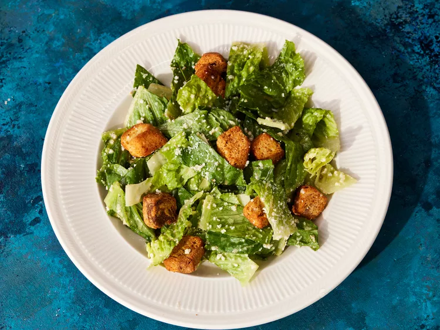

Caesar Salad
Home

Caesar salad is a combination of lettuce, cheese, and caesar dressing which you will make yourself!
Ingredients
- 3 anchovy fillets
- 2 cloves garlic, finely chopped
- ½ lemon, juiced
- 2 tablespoons red wine vinegar
- 1 large egg yolk
- 1 tablespoon Dijon mustard
- 1 dash Worcestershire sauce
- ¼ cup olive oil
- salt and ground black pepper to taste
- ½ head romaine lettuce, chopped
- ¼ cup grated Parmesan cheese
- 2 tablespoons croutons
Steps
- Gather all ingredients.
- To make the Caesar dressing: Mash anchovy fillets and garlic in a large salad bowl. Add lemon juice, red wine vinegar, Dijon mustard, egg yolk, and Worcestershire sauce; whisk until smooth and creamy. Gradually stream in olive oil while whisking constantly. Season to taste with salt and black pepper.
- To serve: Gently mix romaine lettuce and Parmesan cheese into dressing until thoroughly coated.
- Top Caesar salad with croutons and enjoy!